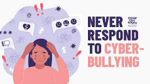
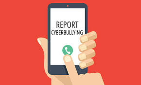

Protect your information: Ensure your social media accounts have strict privacy settings. Avoid sharing personal information like addresses, phone numbers, or your email online.
Don’t respond: Engaging with a bully often makes things worse. It’s best to ignore their messages rather than retaliate.
Block and report: Most platforms allow you to block users who are harassing you. Report their behavior to the platform or website administrators.
Document everything: Keep records of the messages, threats, or any online abuse as evidence. This documentation can be useful if you decide to involve parents, teachers, or legal authorities.
Tell a trusted adult: If you’re being cyberbullied, don’t hesitate to talk to a parent, teacher, or another adult you trust. They can offer advice and help you take action.